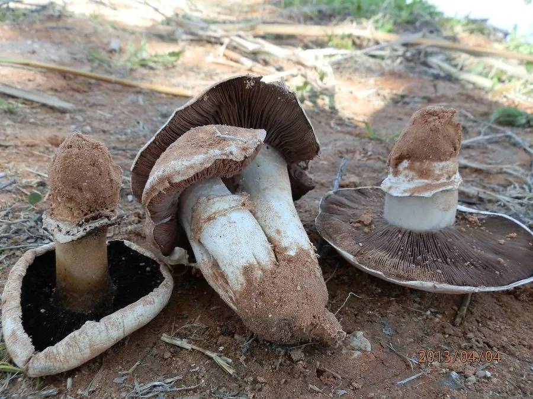

真菌 · 真菌界
大肥菇 Agaricus bitorquis

大肥菇菌盖厚实洁白、菌柄短粗，有双层菌环，能顶开硬实的土壤甚至柏油路面长出，是耐压、耐运输的食用菌。
- 分类
- 门担子菌门纲伞菌纲目伞菌目科蘑菇科属蘑菇属
- 栖息环境
- 草地、路旁、公园与硬实土壤，菌丝能顶开板结土层
- 地理分布
- 温带地区分布，中国北方与城市绿地有记录
- 保护级别
- 暂无评估（IUCN 未评估，中国未列入重点保护名录）
物种志
大肥菇是担子菌门蘑菇科的真菌，子实体单生或群生。菌盖初期半球形，后平展，直径 5–15 cm，表面白色至淡黄褐色，光滑，边缘内卷；菌肉白色、厚实紧致，受伤后略变红。菌褶离生、密集，幼时粉红色，成熟后变为深褐色至黑褐色。菌柄短粗，长 3–8 cm，白色，有双层菌环，这是它区别于其他蘑菇属种类的显著特征，因此又称“双环蘑菇”。孢子印深褐色。
大肥菇生于草地、路旁、公园和硬实的土壤上，菌丝力量很强，能顶开板结的土层甚至柏油路面长出子实体，所以在城市道路旁也常能见到。它夏秋季出菇，在温带地区分布，中国北方和城市绿地有记录。大肥菇肉质紧实、耐压耐运输，是较好的野生食用菌，可炒食和做汤，但必须充分加热；采食时要与同属的有毒种类区分，城市路边生长的个体还可能受污染，不建议采集。
形态与习性
- 菌盖直径 5–15 cm，白色至淡黄褐色
- 菌肉白色厚实，伤后略变红
- 菌褶幼时粉红，成熟后深褐色
- 菌环双层，故称“双环蘑菇”
- 孢子印深褐色
- 特性菌丝力量强，能顶开柏油路面
- 食用性可食，肉质紧实耐运输
趣味知识
- 大肥菇有双层菌环，所以又叫“双环蘑菇”。
- 它的菌丝能顶开板结的土壤，甚至把柏油路面撑裂。
- 大肥菇肉质紧实、耐压耐运输，适合长途贩运。
- 城市路边的大肥菇可能受污染，不建议采食。